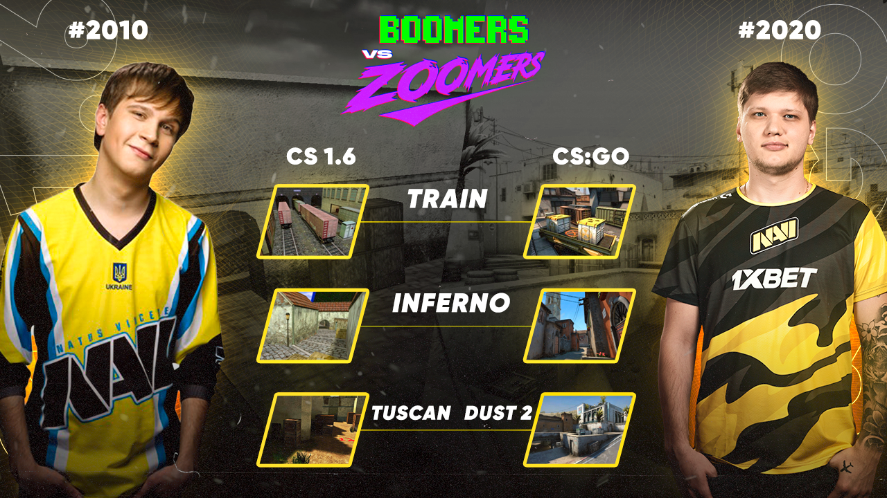

Just one night! Don't miss it! Follow on official Twitter for Fan's forecast voting.
The classic 2010 roster vs our current CS:GO team, @YegorMarkeloff against @s1mpleO, zoomers vs boomers — whatever you call this show match from our @1xBet_Esports, it's simply impossible to miss!
— Natus Vincere (@natusvincere) July 20, 2020
See you on the 1st of August at the official broadcast!https://t.co/F3K8ERzgll pic.twitter.com/c7p6fqSu8T
So...
— Natus Vincere (@natusvincere) July 20, 2020
A Counter-Strike show match between the two  Natus Vincere squads will take place on August, 1st, with the support of the title sponsor of our club. Old school versus new, boomers versus zoomers, Na`Vi 2010 versus NAVI 2020 will undoubtedly be the brightest esports event of the summer.
Natus Vincere squads will take place on August, 1st, with the support of the title sponsor of our club. Old school versus new, boomers versus zoomers, Na`Vi 2010 versus NAVI 2020 will undoubtedly be the brightest esports event of the summer.
The idea to hold a show match occurred on July, 17th, during the stream of the legendary former player of the "Born to Win"  Arseniy "ceh9" Trynozhenko.
Arseniy "ceh9" Trynozhenko.  Kirill "BoombI4" Mikhailov unexpectedly dropped in and decided to essay his strength in CS 1.6. The duel turned out to be so exciting and intense that the audience is now waiting for more.
Kirill "BoombI4" Mikhailov unexpectedly dropped in and decided to essay his strength in CS 1.6. The duel turned out to be so exciting and intense that the audience is now waiting for more.
And due to the title sponsor of  Natus Vincere there will be the full-on show match! IEM 2020 winners vs IEM 2010 winners — who will be the ultimate winner in the Counter-Strike marathon?
Natus Vincere there will be the full-on show match! IEM 2020 winners vs IEM 2010 winners — who will be the ultimate winner in the Counter-Strike marathon?
We guarantee unforgettable emotions to all  Natus Vincere fans. When else can you see idols of all esports generations on one server? And to make the show match even more spectacular, we have prepared really nice surprises, we’ll tell you about them soon. Stay tuned!
Natus Vincere fans. When else can you see idols of all esports generations on one server? And to make the show match even more spectacular, we have prepared really nice surprises, we’ll tell you about them soon. Stay tuned!
Format and maps for the show match:
The format and maps have been revealed for the show match: teams will play 3 maps in CS 1.6 (Train, Inferno, Tuscan) and 3 maps in CS:GO (Train, Inferno, Dust 2).

Showmatch schedule
.png)